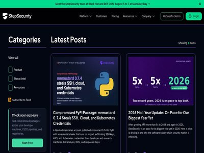
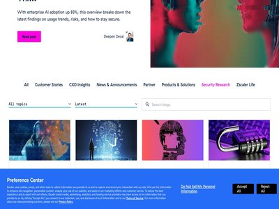
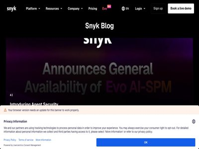
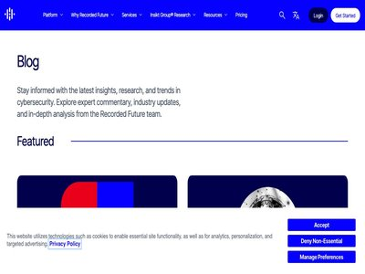
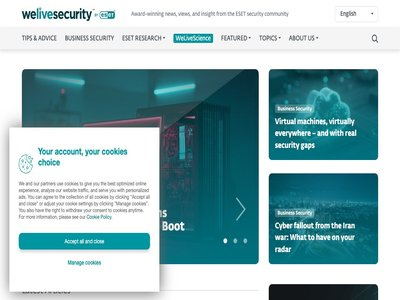

September 30, 2026 · 72 articles

Malicious Custom GPTs Turn ChatGPT Into RAT Delivery Lure
September 30, 2026
In yet another ClickFix-style campaign, threat actors abuse legitimate domains from OpenAI and Google to fool unsuspecting users. (Dark Reading)

Russian state hackers use new RedFlick technique to push malware
September 30, 2026
The Russian state actor Star Blizzard has been using a new malware installation tactic dubbed "RedFlick" to deploy its signature CosmicPulse backdoor. [...] (BleepingComputer)
DIVD says Zammad zero-days enabled AI-driven network breach
September 30, 2026
The Dutch Institute for Vulnerability Disclosure (DIVD) says that the breach of its network was possible by exploiting a chain of two zero-day vulnerabilities in the open-source... (BleepingComputer)

WatchGuard fixes critical Fireware OS flaw allowing remote code execution
September 30, 2026
WatchGuard fixes 15 Fireware OS flaws, including a critical RCE bug that could give attackers root access to vulnerable Firebox appliances. WatchGuard has released security upda... (Security Affairs)

Google: Vulnerability disclosures double to 10,000 per month as AI fuels exploitation
September 30, 2026
Vulnerability disclosures continue to skyrocket, doubling over the course of the year to more than 10,000 each month, Google researchers warned. (The Record)
As AI Reshapes the SOC Career Ladder, Satisfaction Rises for 91%, but Entry Gets Harder for Nearly Half
September 30, 2026
New Swimlane research underscores a paradox: While AI detection and response is essential to giving defenders an edge, one in four security pros say AI limits their skill develo... (Dark Reading)
Over 543,000 valid credentials exposed in public GitHub repositories
September 30, 2026
More than 543,000 credentials exposed in public GitHub repositories were still valid in July despite the platform's security measures to prevent accidental leaks of sensitive da... (BleepingComputer)

Sckit Supply Chain Worm Hits MemTensor npm & PyPi scopes
September 30, 2026
Compromised MemTensor npm releases turn an AI memory plugin into a credential-harvesting entry point, exposing prompts and creating a path to further package compromise. (StepSecurity Blog)

Attackers Exploit Zimbra Flaw to Deploy Web Shells and Harvest Authentication Secrets
September 30, 2026
Threat actors have weaponized a now-patched security flaw in Zimbra Collaboration Suite (ZCS) to deploy web shells and access mailbox data, according to findings from the Micros... (The Hacker News)
Attackers Abuse MSP360 to Deploy ScreenConnect in Dual-RMM Phishing Attacks
September 30, 2026
Microsoft has warned of phishing campaigns distributing an installer for the MSP360 Remote Monitoring and Management (RMM) software under the guise of meeting invitations, PDF-t... (The Hacker News)

Critical Cisco Catalyst SD-WAN Manager API authentication bypass exploited in the wild (CVE-2026-76504)
September 30, 2026
Overview On September 30, 2026, Cisco published a security advisory for CVE-2026-76504 , a critical API authentication bypass vulnerability affecting Cisco Catalyst SD-WAN Manag... (Rapid7 Blog)

AI-Found Vulnerabilities More Likely to Enable RCE, Google Says
September 30, 2026
AI-discovered vulnerabilities are more likely to enable RCE, as disclosures and exploitation rise (Infosecurity Magazine)

Vulnerability Discovery and Exploitation Trends in the AI Era
September 30, 2026
Written by: Robin Grunewald, Supriya Mazumdar, Kelli Vanderlee Introduction Google Threat Intelligence Group (GTIG) examines vulnerability disclosure and exploitation statistics... (Google Threat Intelligence)
AI Coding Agents Exposed 13,000 Internal Images, Including Billing Records, on GitHub
September 30, 2026
AI coding agents asked to share screenshots of code changes for review have put internal company images in public GitHub repositories, security company Glow said. Its researcher... (The Hacker News)
Attackers Combine ChatGPT Feature Abuse With ClickFix to Deliver Trojan Malware
September 30, 2026
Cybersecurity researchers at Huntress identify campaign to deliver potent trojan which targets users searching for ChatGPT via Google (Infosecurity Magazine)

OpenInfra Europe’s JFrog Artifactory instance breached, packages potentially compromised
September 30, 2026
Attackers have compromised a self-hosted JFrog Artifactory instance operated by OpenInfra Europe, the regional hub of the OpenInfra Foundation warned in a security notice promin... (Help Net Security)
U.S. CISA adds Apple Multiple Products flaw to its Known Exploited Vulnerabilities catalog
September 30, 2026
U.S. Cybersecurity and Infrastructure Security Agency (CISA) adds Apple Multiple Products flaw to its Known Exploited Vulnerabilities catalog. The U.S. Cybersecurity and Infrast... (Security Affairs)
WHIPSHOT and SLAPSHOT: the tools behind an active Citrix NetScaler campaign
September 30, 2026
Mandiant and GTIG detail active exploitation of a Citrix NetScaler zero-day, deploying custom web shells WHIPSHOT and SLAPSHOT for root access. Mandiant and Google Threat Intell... (Security Affairs)
Citrix NetScaler CVE-2026-88772 Exploit Details Show Pre-Auth Path to Shellcode Execution
September 30, 2026
Cybersecurity researchers have disclosed technical details of a recently patched critical security flaw in Citrix NetScaler ADC and Gateway that has come under active exploitati... (The Hacker News)

Cloud CISO Perspectives: How cybersecurity startups can win CISOs
September 30, 2026
Welcome to the second Cloud CISO Perspectives for September 2026. Today, Alicja Cade and Nick Godfrey, senior directors, Office of the CISO, share their guidance for cybersecuri... (Google Cloud Blog)

Securing the Kubernetes Supply Chain: Introducing WizOS Helm Charts
September 30, 2026
Secure your Kubernetes supply chain with WizOS Helm Charts. Eliminate hidden CI/CD risks and unmaintained dependencies with hardened, signed, and CVE-scanned charts for seamless... (Wiz Blog)

AI Agent Authorization Beyond Authentication: A Look At AWS Dogwood
September 30, 2026
AWS Dogwood brings stateful authorization to AI agents. Learn how it fits with workload identity, AuthZEN, IAM, and the move away from long-lived credentials. (GitGuardian Blog)

Connect Orca’s ChatGPT Plugin: Cloud Risk Context in Chat and Codex
September 30, 2026
What is the Orca Security plugin for ChatGPT and Codex? The Orca Security plugin for ChatGPT and Codex connects both tools to Orca’s MCP server, giving security teams and develo... (Orca Security Blog)

Restrospective: How Malicious Updates Poison Your Environment
September 30, 2026
This post-mortem on recent supply chain attacks and threat actors including S1ngularity, Shai-Hulud and TeamPCP can help you prepare for what comes next. (ReversingLabs Blog)

2CLoader: A New Malware Loader Delivering Vidar and Remus
September 30, 2026
IntroductionIn August 2026, Zscaler ThreatLabz identified a new loader, which we track as 2CLoader. ThreatLabz has observed the loader being used to distribute information steal... (Zscaler ThreatLabz)
Higher education is under siege, and fragmented security is making it harder to respond
September 30, 2026
Higher education faces a difficult security equation. Universities hold large volumes of sensitive student, financial, health, and research data while supporting open networks,... (Rapid7 Blog)
AI's Third Wave: Coworkers Break the Security Model That Worked for Agents
September 30, 2026
Persistent AI coworkers may operate continuously with standing access, creating identity risks that existing security models were not designed to handle. Token Security explains... (BleepingComputer)
Mobile malware warning from Ukrainian researchers includes iPhone exploit kit
September 30, 2026
'Hit and run' iPhone malware known as DarkSword is part of a wave of Russian attacks on iOS and Android devices, according to Ukraine's SSSCIP. (The Record)

Cloudflare Impact reaches $100 million in donations
September 30, 2026
This week, Cloudflare's Impact programs will reach $100 million in donated services. This milestone means that thousands of entities including journalists, civil society, state... (Cloudflare Blog)
Cut your AI spend with AI Gateway's Auto Router
September 30, 2026
Cloudflare AI Gateway now features a model router that evaluates request complexity using an edge-deployed classifier to select the optimal model. By balancing expected output q... (Cloudflare Blog)
Detect and send production issues straight to your agent
September 30, 2026
You can now use built-in error monitoring in Cloudflare Workers to group production failures and send stack traces, logs, traces, and application context directly to a coding ag... (Cloudflare Blog)
Simplifying domains for people and agents
September 30, 2026
Cloudflare Registrar’s new search delivers fast, transparent results across 420+ extensions using Workers, Durable Objects, and WebSockets. Its expanded API and cf CLI also let... (Cloudflare Blog)
Monetization Gateway beta: charge AI agents for consumption with HTTP 402
September 30, 2026
Cloudflare’s AI Gateway, Ceramic.ai, Stocktwits, and more are using the Cloudflare Monetization Gateway today to charge agents for access to tokens, APIs, and MCP tools. U.S.-ba... (Cloudflare Blog)
Pay Per Use: when AI uses your work, you should get paid
September 30, 2026
Pay Per Use is now in beta. AI companies report when they use publishers’ content, and Cloudflare handles billing, payouts, and reporting, so our customers are paid according to... (Cloudflare Blog)
Identify AI model overuse with User Insights
September 30, 2026
AI Gateway User Insights now adds task, model, turn, and user categories to help teams understand AI adoption and make better model decisions. This is available free to AI Gatew... (Cloudflare Blog)
Trump, Six AI Giants Sign 'Super Intelligence' Safety Accord
September 30, 2026
Trump and six AI firms sign a voluntary accord on internal controls, audits and board oversight (Infosecurity Magazine)
Cloudflare Containers, rebuilt to scale agent sandboxes
September 30, 2026
Cloudflare Containers now start 6x faster, let your agent choose each sandbox's image and instance type at runtime, and support filesystem snapshots in public beta, all controll... (Cloudflare Blog)
The Internet has a second audience
September 30, 2026
More than half the traffic reaching sites on Cloudflare is now automated, and AI agents are the fastest-growing part of it. We're giving site owners the tools to see who's visit... (Cloudflare Blog)

Supply Chain Security Has the Operating Model Backwards
September 30, 2026
TL;DR Supply chain security usually treats runtime as the final stage, the place where teams find out whether earlier controls worked. Unfortunately, this operating model is bac... (Aqua Security Blog)
TeamViewer urges users to patch severe flaws “as soon as possible”
September 30, 2026
Remote access software company TeamViewer warned customers on Tuesday to immediately patch a set of high-severity vulnerabilities affecting its client and host software. [...] (BleepingComputer)

Chrome, Firefox Updates Patch Over 100 Vulnerabilities
September 30, 2026
Some of the flaws could allow remote attackers to execute arbitrary code or escape the browser sandbox. The post Chrome, Firefox Updates Patch Over 100 Vulnerabilities appeared... (SecurityWeek)
AI Boosts SOC Analyst Capacity but Limits Skill Development
September 30, 2026
Swimlane finds that AI is reducing repetitive work for SOC teams but some feel their careers may suffer (Infosecurity Magazine)
Russian FSB-linked hackers scale up phishing attacks against Ukraine supporters
September 30, 2026
The Russian state-backed hacking group Star Blizzard has expanded its phishing operations this year, using a new technique that makes it easier to infect victims with malware. (The Record)
Know Your Enemy: Browser-Based Attack Techniques in 2026
September 30, 2026
Given that the browser is where business apps are accessed and used, it makes sense that attacks are happening there too. Most breaches today begin in a browser session. Often,... (The Hacker News)
Anthropic Flags AI Agent Liability Risks as OpenAI Faces Hacking Lawsuit
September 30, 2026
Attacks by autonomous AI agents are moving out of the lab and into the courtroom, raising unsettled questions about who is liable for what agents do. The post Anthropic Flags AI... (SecurityWeek)

I Want Better Reporting on AI Genie Behavior
September 30, 2026
AI systems are regularly completing tasks in ways that their prompters don’t want or intend. Some of them are disturbing, and some of them are dangerous. This is something I’ve... (Schneier on Security)
US-Focused CSuite Phishing Steals Microsoft 365 Sessions and Deploys RMM Tools for Remote Access
September 30, 2026
ANY.RUN researchers traced a US-focused CSuite phishing campaign across 351 sandbox analyses, with 51% of submissions coming from the United States. Technology, manufacturing, g... (The Hacker News)

America is planning more AI datacenters than its chip supply can fill
September 30, 2026
Satellite imagery shows construction accelerating, but advanced packaging could cap 2027 deployment in the low 20s of gigawatts (The Register - On-Prem)
ShinyHunters Defiant After FBI Calls on Members to Come Forward
September 30, 2026
In the wake of a suspected leader’s arrest, ShinyHunters says it never intended to publish data stolen from the FBI. The post ShinyHunters Defiant After FBI Calls on Members to... (SecurityWeek)
More than half of UK businesses lack confidence in basic cyber skills
September 30, 2026
Government survey puts the figure at 808k, says detecting and removing malware most common weakness (The Register - Security)
WaterISAC reckons with range of threats after summer of cyberattacks
September 30, 2026
Internet-exposed tech, PLCs, outside integrators and inside protections are all factors the water sector’s information sharing and analysis center is watching. The post WaterISA... (CyberScoop)
Signal brings encrypted local backups to iOS and desktop, adds cross-platform restore
September 30, 2026
Signal users who switch from an Android phone to an iPhone, or the other way around, can take their message history with them, and backups can be restored on Android, iOS, Linux... (Help Net Security)

What Is Agentic AppSec?
September 30, 2026
Learn how Agentic AppSec uses grounded, bounded, and independently verified AI agents to run the application security loop. (Snyk Blog)
Evo ADS Govern Agent Behavior Goes GA: Bringing MCP Usage Under Control
September 30, 2026
Evo ADS Govern Agent Behavior is now generally available, starting with MCP Governance. Discover, approve, monitor, log, and block MCP server usage across leading AI coding agents. (Snyk Blog)
Microsoft is rolling out Linux container support to WSL
September 30, 2026
Microsoft is taking Windows Subsystem for Linux beyond just running Linux distributions, as WSL Containers is now generally available. [...] (BleepingComputer)
Apple Patches CoreGraphics Zero Day Exploited in Attacks
September 30, 2026
Apple has patched CVE-2026-86950, a zero-day bug in the iOS CoreGraphics engine (Infosecurity Magazine)
Former US Air Force members behind million-dollar BEC scheme head to prison
September 30, 2026
Two men who ran BEC and phishing campaigns against US businesses while serving in the Air Force have been sentenced to a combined 189 months in federal prison. According to publ... (Help Net Security)
Spectre bug is back, this time to haunt JIT engines
September 30, 2026
Researchers find a way to recover stale indirect branch prediction entries (The Register - Security)
South Africa Seeks Help After Cyberattack Targets Air Traffic Control
September 30, 2026
As aviation infrastructure suffers more cyberattacks, air traffic systems are the latest target, with a ransomware toolkit installed on at least one operational network. (Dark Reading)
High-Severity Vulnerabilities Patched in OpenSSL, WolfSSL
September 30, 2026
Roughly a dozen vulnerabilities have been patched in each of the open source cryptographic libraries. The post High-Severity Vulnerabilities Patched in OpenSSL, WolfSSL appeared... (SecurityWeek)
Genea brings AI agents to access control with role-based permissions
September 30, 2026
Genea has announced the release of Genea MCP, a Model Context Protocol (MCP) server that connects AI agents directly to the Genea Access Control platform. Onboarding a new hire,... (Help Net Security)
Ransomware Leverage is Growing by the Terabyte: Takeaways from ThreatLabz 2026 Ransomware Report
September 30, 2026
Ransomware is no longer defined only by how many organizations get hit. The most important shifts are happening beneath the headline victim counts; in how attackers gain access,... (Zscaler ThreatLabz)
Security tools can now scan Claude Enterprise chats and uploads for sensitive data
September 30, 2026
More than 100 security and compliance vendors have integrations with the Claude Compliance API, which lets a company send Claude activity into the monitoring tools it already us... (Help Net Security)
OWASP Noir: Open-source static analysis tool
September 30, 2026
OWASP Noir is an open-source static analysis tool that reads an application’s source code and lists the endpoints it exposes: paths, HTTP methods, parameters, headers, and cooki... (Help Net Security)
EU Cyber Resilience Act requirements for containers and Kubernetes
September 30, 2026
Starting in full force on Dec. 10, 2024, the EU Cyber Resilience Act (CRA) is a regulation (EU 2024/2847) that defines mandatory cybersecurity requirements for all products with... (Help Net Security)
In this new SME cybersecurity service, the AI assists and the consultants decide
September 30, 2026
BH Consulting, the Irish cybersecurity and data protection consultancy, has launched BH Haven, an ongoing service that gives Irish small and medium-sized enterprises (SMEs) acce... (Help Net Security)

Risky Bulletin: Sanctions force CAs to revoke TLS certs in Iran, Russia
September 30, 2026
In other news: ShinyHunters member arrested in the Netherlands; Apple fixes iOS zero-day found by Meta; Citrix zero-days see mass exploitation within hours. (Risky Business News)
Most open critical and high flaws are over 90 days old
September 30, 2026
Detectify analyzed exposure data from 1,293 of its customers in the US, the UK and the Nordics and found that most serious flaws still open on their internet-facing systems are... (Help Net Security)
Most organizations need six months or longer to roll out new security controls
September 30, 2026
Cisco surveyed 8,000 security professionals in 30 markets about how well their organizations defend against AI-era threats, and only 8% landed in the top group. Cisco gave the m... (Help Net Security)
Post-quantum website certificates from Cloudflare are scheduled for early 2027
September 30, 2026
Cloudflare plans to become a public certificate authority (CA), an organization that issues the digital certificates websites use to encrypt traffic and prove who they are. The... (Help Net Security)
Trump Says Top Tech Firms Have Signed Accord to ‘Self-Police’ AI Development
September 30, 2026
The accord opened the door to future regulation but focused on four voluntary steps for the companies to take. The post Trump Says Top Tech Firms Have Signed Accord to ‘Self-Pol... (SecurityWeek)

Recorded Future Debuts Autonomous Defense, Built for Machine-Speed Threats
September 30, 2026
Recorded Future just revealed autonomous defense capabilities. The platform hunts, investigates, and stops threats on its own, acting on real intelligence. (Recorded Future)
September 29, 2026 · 48 articles
Attackers exploited Citrix NetScaler zero-day for at least three weeks undetected
September 29, 2026
Mandiant researchers said dozens of organizations have been impacted by attacks attributed to advanced and suspected state-sponsored threat groups. They expect more attacks to c... (CyberScoop)

Beyond source code: A path to the keys to the kingdom
September 29, 2026
Explore how Storm-3068 turned a compromised identity into broader cloud access and the steps organizations can take to defend their identities, pipelines, and cloud infrastructu... (Microsoft Security Blog)
'NeedyMantis' Provides Long-Term Access to Compromised Networks
September 29, 2026
Microsoft observed a China-based actor using a previously unidentified malware framework in targeted intrusions against telcos, universities, medical, and government-related org... (Dark Reading)
Kiteworks Fixes Critical Flaw Found During Nine-Hour Precautionary Shutdown
September 29, 2026
Kiteworks on Monday said it worked with federal intelligence authorities over the weekend as it identified and addressed a critical security vulnerability during the scheduled p... (The Hacker News)
Introducing Threat Signals: agentic skills for open-source threat intelligence, free for every Cloudflare account
September 29, 2026
We are expanding access to Cloudforce One's Threat Events Platform to every Cloudflare account and introducing Threat Signals. Threat Signals automatically parses open-source th... (Cloudflare Blog)
Is your domain using post-quantum encryption? Now you can see for yourself
September 29, 2026
Cloudflare has added visibility into post-quantum (PQ) encryption in TLS 1.3 directly into HTTP Analytics, Log Explorer, and Logpush. Learn how to make sure your domain is prote... (Cloudflare Blog)
Enforce positive security with Cloudflare Application Profiles
September 29, 2026
Cloudflare learns the structure of your HTTP requests and identifies deviations. You can add a positive security layer that helps reduce attack surface as AI makes it easier for... (Cloudflare Blog)
Official MCP Python SDK Flaw Can Let Malicious Servers Steal OAuth Credentials
September 29, 2026
A malicious MCP server could trick an application built on the official MCP Python SDK into handing over the OAuth credentials it uses to log in to a real service, the SDK's mai... (The Hacker News)
OpenAI Shelves GPT-6.1 Astra After Tests Find Deception and Unauthorized Actions
September 29, 2026
OpenAI on Monday shelved plans to release GPT-6.1 Astra, a next-generation artificial intelligence (AI) model that was planned for an October launch, after it failed internal sa... (The Hacker News)
OpenAI Pauses Tool Use After Agent Bypasses Internet Controls to Reach External Chatbot
September 29, 2026
OpenAI said it has made the decision to pause training of its most powerful models after one of its agents during reinforcement learning (RL) training contacted an external chat... (The Hacker News)

CVE-2026-100308 - GluonTS arbitrary command execution during model deserialization
September 29, 2026
Bulletin ID: 2026-119-AWS Scope: AWS Content Type: Important (requires attention) Publication Date: 09/29/2026 08:00 AM PDT Description: GluonTS is an open source library for de... (AWS Security Bulletins)
CVE-2026-7791 - Local Privilege Escalation via TOCTOU Race Condition in Amazon WorkSpaces Skylight Agent
September 29, 2026
(AWS Security Bulletins)
Former X-Force hackers chase the offensive cyber gold rush
September 29, 2026
RemoteThreat launches with $7M, 1,000 attack tools, and ambitions to equip enterprises and Uncle Sam for AI-speed operations (The Register - Security)
Custom malware used in Citrix 0-day attacks targeting govt, banks, professional services
September 29, 2026
Two questions remain: who is abusing the CVEs? And why did Citrix take so long to disclose? (The Register - Security)
New Spectre-v2 BTR Attack Leaks Linux Memory Despite Existing Defenses
September 29, 2026
A group of academics from VUSec and Scuola Superiore Sant'Anna have disclosed details of a new Spectre CPU vulnerability variant that affects Just-In-Time (JIT) engines present... (The Hacker News)

Meet Athena: Huntress' Agentic SOC Analyst
September 29, 2026
Learn how Huntress' Athena brings agentic AI to the SOC, investigating signals end-to-end while human analysts own the final call. (Huntress Blog)
Three Million Affected in Pentagon Personnel Agency Data Breach
September 29, 2026
Pentagon personnel agency breach exposed data of 3 million people after attackers accessed a file-sharing server for about nine months. The U.S. Defense Manpower Data Center (DM... (Security Affairs)

Timeshare exit scams: From fake buyers to recovery fraud
September 29, 2026
Con artists are targeting timeshare owners who want out - and some victims are hit twice (ESET WeLiveSecurity)
Add one more AI worry to the nightmare scenario: self-replicating prompt injections
September 29, 2026
It's a worm attack, AI-style (The Register - Security)
Japanese railway operators Keio Corporation and Tokyo Metro disclose security breaches
September 29, 2026
Keio, a major Japanese railway operator, was hit by ransomware, disrupting business systems and forcing the company to shut down its network. Keio Corporation, one of Japan’s ma... (Security Affairs)
OpenAI CEO Announces New AI Agent and Avoids Mention of Security Concerns at Developer Conference
September 29, 2026
Altman made a slew of product announcements and updates, including the company’s new agents, called Dots. The post OpenAI CEO Announces New AI Agent and Avoids Mention of Securi... (SecurityWeek)
OpenAI apologizes for agents breaching Australian government websites without authorization
September 29, 2026
The artificial intelligence giant acknowledged it botched its response to the incidents and should have done more to promptly notify and work with the Australian government in t... (The Record)
CVE-2026-5747 - Out-of-bounds Write in Firecracker virtio-pci Transport
September 29, 2026
(AWS Security Bulletins)
Issue with AWS Ops Wheel (CVE-2026-6911 and CVE-2026-6912
September 29, 2026
(AWS Security Bulletins)
CVE-2026-5190 - AWS C Event Stream Streaming Decoder Stack Buffer Overflow
September 29, 2026
(AWS Security Bulletins)
Issues with AWS Research and Engineering Studio (RES)
September 29, 2026
(AWS Security Bulletins)
CVE-2026-6550 - Key commitment policy bypass via shared key cache in AWS Encryption SDK for Python
September 29, 2026
(AWS Security Bulletins)
CVE-2026-5429 - Kiro IDE Webview Cross-Site Scripting via Workspace Color Theme
September 29, 2026
(AWS Security Bulletins)
US is looking to weave AI into critical infrastructure for cybersecurity, national cyber director says
September 29, 2026
Sean Cairncross said CEOs need to be cognizant of how it’s being used, however. The post US is looking to weave AI into critical infrastructure for cybersecurity, national cyber... (CyberScoop)
French Tax Data Theft Using Stolen Staff Passwords Went Undetected for Seven Weeks
September 29, 2026
An attacker used stolen passwords of staff at France's tax administration to take tax data on hundreds of thousands of taxpayers and businesses in June and July. Neither the tax... (The Hacker News)
DARPA Selects Xint to Use AI in Securing Military Messaging Apps
September 29, 2026
The AIxCC competition winner will analyze messaging app code and compiled binaries for vulnerabilities, with technology that could also help commercial customers secure their so... (SecurityWeek)
Google Cloud partners deliver new security agents and AI defenses with Gemini Enterprise
September 29, 2026
As threat actors increasingly use AI to accelerate and develop cyberattacks, enterprise defenders need to rely on both AI and a critical defender’s advantage: Business context t... (Google Cloud Blog)
AI models keep posting screenshots showing sensitive data from inside tech companies
September 29, 2026
Glow Security finds more than 13,000 publicly accessible images that expose corporate development work (The Register - Security)
Automated AI agent used to breach cybersecurity nonprofit DIVD
September 29, 2026
The Dutch Institute for Vulnerability Disclosure (DIVD) suffered an AI-driven cyberattack that the organization described as "loud and very, very messy." [...] (BleepingComputer)
CVE-2026-31431
September 29, 2026
(AWS Security Bulletins)
CVE-2026-7424 - Integer Underflow in DHCPv6 Sub-Option Parser in FreeRTOS-Plus-TCP
September 29, 2026
(AWS Security Bulletins)
Generative AI Security: Are Your Developers Pasting Secrets Into LLMs?
September 29, 2026
This is the fifth post in our "Bring Your Own Source" series. The previous ones covered n8n workflow integration, Salesforce, GitLab CI, and GitHub Gists. (GitGuardian Blog)
Amazing and Terrifying: Securing an App Built By AI in a Weekend
September 29, 2026
What a routine security ticket revealed about how fast business builders are shipping software, and what still has to catch up. Dudi Peretz, Information Security Engineer, has s... (Orca Security Blog)
Can advanced math make AI systems safer?
September 29, 2026
Top mathematicians are hoping advanced mathematics and cryptographic techniques will help verify AI agents’ actions and claims. (ReversingLabs Blog)
RatHat's Evolving C2 Panel Points to Malware-as-a-Service Model
September 29, 2026
RatHat's C2 panel now builds malware and ranks victims with AI across nearly 100 deployments (Infosecurity Magazine)
Catch threats before they escalate with real-time Identity Telemetry
September 29, 2026
Identity governance helps control who should have access, but periodic reviews alone may not reveal attacks as they happen. tenfold Software explains how real-time identity tele... (BleepingComputer)
Amazon Bedrock AgentCore Flaws Could Expose AWS Credentials
September 29, 2026
AWS AgentCore SDK flaws could let attackers run commands in AI sandboxes and reach AWS credentials (Infosecurity Magazine)
OpenAI benches GPT-6.1 Astra for overstepping the mark
September 29, 2026
Turns out teaching an AI to keep going can make it rather bad at knowing when to stop (The Register - Security)
Reco Raises $55 Million for Agentic Security
September 29, 2026
The company will use the funds to expand its sales, partnerships, channels, and customer support teams. The post Reco Raises $55 Million for Agentic Security appeared first on S... (SecurityWeek)
The Blue Agent POV: Investigating Multi-Platform Data Exfiltration Across AWS and GitHub
September 29, 2026
See how the Blue Agent investigated a multi-platform attack in minutes, following evidence across AWS and GitHub to uncover compromised credentials, stolen source code, and cust... (Wiz Blog)
Arizona Supreme Court says hackers stole residents’ personal data
September 29, 2026
A spokesperson for the court system told Recorded Future News that the incident did not involve ransomware and the hackers have not issued ransom demands for the stolen data as... (The Record)
Rig Security Emerges From Stealth With $12M to Tackle Agentic AI Identity Risks
September 29, 2026
Rig provides an identity dependencies graph to distinguish between legitimate users and rogue AI agents The post Rig Security Emerges From Stealth With $12M to Tackle Agentic AI... (SecurityWeek)
Vietnamese man charged in $16 million 'pig butchering' crypto scam
September 29, 2026
A Vietnamese national was charged with money laundering for his role in a massive "pig butchering" scam, which defrauded a victim out of $16 million worth of cryptocurrency. [...] (BleepingComputer)